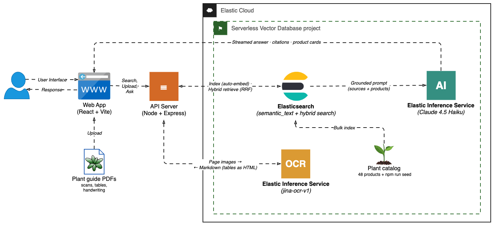
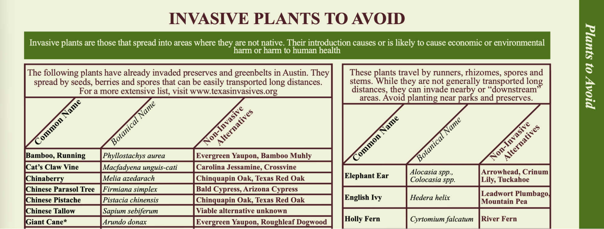

目录 · 8 节
1它在解决什么问题？2整体架构：两条路径3第一步：把扫描页变成干净的 Markdown4第二步：写入索引时自动切块和向量化5第三步：混合检索和带页码的回答6我认为它的局限7一个文档问答团队可以怎么试8结论与评价这是一篇工程教程，不是论文，但它把“扫描件也能检索、回答还能标页码”这条链路拆得很清楚，值得做文档问答的团队参考。核心变化是：原来要串联版面分析、文字识别、表格解析、切块、向量化五六个环节，现在只剩“一个视觉语言模型读页面”加“一个字段自动切块和向量化”两步。作者用一份 56 页的扫描版植物指南演示，从上传到拿到带页码的回答不到 5 分钟。我认为它证明的是“能搭起来”，效果好坏要用自己的文档评测。
它在解决什么问题？
很多知识不在数据库里，而在扫描的 PDF、表单、拍照的文件里。传统检索读不了图片；传统 OCR（光学字符识别，把图片里的字转成文本）流水线要分别跑版面检测、文字识别、表格解析、阅读顺序还原四个模型，每个都有自己的成本和出错方式，最后表格常常被打散成一行行没有结构的文字。
作者的演示场景是一个卖得州本土植物的电商网站：顾客上传一份奥斯汀市和得州农业推广服务机构合编的 56 页植物指南，然后问“哪些树耐浅层石灰岩土壤”，系统给出依据指南的回答、标出页码，并推荐店里有货的植物。这份指南几乎每页都是密集的多栏表格，有大量缩写（比如 VL（需水量很低）、B/E（黑土草原和爱德华兹高原两个生态区））、勾选符号和斜体学名，所以作者说“能把这些表格还原好的解析器，处理发票不在话下”。
整体架构：两条路径

上传路径：PDF 先按页渲染成图片，每页送给 jina-ocr-v1（Jina 的文档解析模型），拿回结构化的 Markdown，再写进 Elasticsearch。提问路径：问题先做混合检索，找到相关片段和商品，再交给 Claude Haiku 4.5 生成带引用的回答。所有模型都托管在 EIS（Elastic 推理服务）上，不用自己部署 GPU，按 token 计费。
页面循环由谁来跑，是这里唯一的架构选择：
| 方案 | 谁跑页面循环 | 每次调用的输入 | 运行位置 |
|---|---|---|---|
| Jina Reader 接口 | Jina 服务端 | 一整个 PDF | Elastic 项目之外，单独的密钥和账单 |
| 直接调对话接口 | 自己的应用 | 一页 | Elastic 项目之外 |
| EIS 托管端点 | 自己的应用 | 一页图片 | Elastic 项目之内，一个密钥一份账单 |
作者选第三种，页面循环只是几十行代码。我认为这个选择的实际意义是安全边界：文档内容不出项目，审计和权限都在一处。
第一步：把扫描页变成干净的 Markdown

jina-ocr-v1 一次前向计算同时完成版面、文字、表格和阅读顺序。它的输出有四个对检索很关键的特点：保留阅读顺序，章节标题变成 Markdown 标题；表格输出成 HTML 表格，数值不丢；手写字直接转写在原位置；页眉、页脚、印刷页码被去掉，不会污染检索，页码改由程序在循环里自己记。
模型一次读一张页面图片，清晰度上限约 2048×2048 像素。作者把每页渲染成约 1224×1584 像素。手算一下（示意）：这正好是美式信纸 8.5×11 英寸乘以每英寸 144 个像素，约 194 万像素，不到上限 2048×2048（约 419 万像素）的一半，所以留了余量。每页图片转成 base64 编码，像普通的看图对话请求一样发过去，提示词只有一句：“把这页转成干净的 Markdown，保留阅读顺序，表格用 HTML 表示。”
并发是 4 页同时跑，拼回时保持原顺序。按“56 页不到 5 分钟”粗算（示意）：总时间上限 300 秒，4 路并行，相当于每页最多约 300×4÷56≈21 秒。这个数字包含渲染、网络和写入，不能当成模型本身的速度。
第二步：写入索引时自动切块和向量化
每份上传的文档单独建一个索引，名字跟着文件名走。索引里 content 字段按普通文本建倒排索引，同时用 copy_to 复制一份到 semantic_text 类型的字段。semantic_text 是 Elasticsearch 的一种字段类型：写入时自动把长文本切块，调用项目默认的 embedding 端点算向量并存好，查询时也自动把问题转成向量。这意味着不用写切块代码、不用跑单独的向量化任务、也不用自己管向量和原文的对应关系。
另有一个登记用的小索引，记录解析过的所有文档，聊天界面靠它列出可选范围。
第三步：混合检索和带页码的回答
提问时并行跑两次混合检索，一次查文档，一次查商品目录。每次都用 RRF（Reciprocal Rank Fusion，按名次融合多路结果）把两路排名合在一起：一路是关键词匹配，能精确命中学名“Quercus macrocarpa”、缩写“VL”或价格；另一路是语义检索，能找到“适合多石碱性土的树”这种字面上不出现的意思。
RRF 的公式是：每篇文档的融合分 = 各路中 1÷(k+名次) 之和，Elasticsearch 默认 k=60。手算例子（示意）：文档甲在关键词一路排第 1、语义一路排第 3，融合分是 1/61+1/63≈0.0323；文档乙只在语义一路排第 1，融合分是 1/61≈0.0164。所以两路都靠前的文档会胜出，而且 RRF 只看名次，不用担心两路分数的量纲不同。
页码靠高亮功能找回。我查了作者开源的 server/documents.js，做法是这样的：解析完后，程序在每页 Markdown 前面插一行 HTML 注释形式的页码标记 <!-- page N -->，再把所有页拼成一整段文字，作为一条记录写入索引。检索时取前 3 条命中，语义高亮每条最多返回 4 个最匹配的块，关键词高亮每条最多返回 2 个约 350 字符的片段。然后按命中名次逐条处理：每条先放语义片段、再放关键词片段，各自按相关度排序，开头 80 个字符相同的片段视为重复丢掉，最后所有命中加起来只取前 5 个片段交给模型。手算例子（示意）：第 1 条命中有 4 个语义片段和 2 个关键词片段，那么前 4 个语义片段加第 1 个关键词片段就占满了 5 个名额，第 2、3 条命中一个片段都进不去；每个片段用正则表达式找里面的页码标记，找到就记为该页。手算例子（示意）：某个块的文字是“…<!-- page 50 --> 入侵植物…”，就标为第 50 页。 Hoot 说

- 名额：4 + 1 = 5，命中 2、3 进来 0 个（示意）
- 如果命中 1 只有 2 个语义片段：2 + 2 = 4，命中 2 才能补进 1 个（示意）
- 页码：片段里有 <!-- page 50 --> 就标第 50 页；没有标记只写文档名；跨页时取第一个，也就是前一页
按作者开源的 server/documents.js 画；片段数量是示意。 出处: 原文 + server/documents.js：取前 3 条命中，每条语义片段 ≤ 4、关键词片段 ≤ 2，开头 80 个字符相同去重，全局只取前 5 个；页码靠片段里的 <!-- page N --> 标记
这意味着页码是“碰运气”的：只有片段恰好包含页码标记时才有页码，标记落在片段外面时页码为空，回答里就只写文档名、不写页码；如果片段跨页、含有两个标记，正则只取第一个，也就是前一页。生成时给模型严格的约束：只能根据检索到的来源回答，按“文档名加页码”引用，只能推荐目录里有的商品，找不到答案就直说。模型还会额外输出一行隐藏的推荐商品编号，服务端把它从回答里删掉，只显示这些商品；所以店里没有合适商品时，界面就不显示商品卡片，而不是硬推。
作者给了四个测试问题，分别考语义检索、学名精确匹配、表格里的答案和图例表。我认为这是很好的冒烟测试清单，因为它覆盖了混合检索两路各自擅长的情况，也覆盖了“答案只存在于表格里”这种传统抽文本最容易失败的情况。
我认为它的局限
- 证据是演示性的。作者的效果描述是“在这份语料上，混合检索持续找出了关键词匹配漏掉的植物”，并用对比界面展示具体例子。召回率、引用准确率、表格还原准确率要用自己的文档测出来再决定。
- 按页处理，页码定位粗糙。一页一次调用，跨页表格会被切断；页码只在片段恰好含标记时才有。更稳的做法是入库时每页一条记录，或给每个块单独存页码字段。
- 每份文档一个索引，文档量到成千上万时，索引数量和集群管理会成为问题；正式系统更可能用一个索引加文档编号字段。
- 解析错误是静默的。表格里一个数字识别错，会被原样向量化、检索、引用，而且引用还标着正确页码，看起来更可信。
一个文档问答团队可以怎么试
- 挑 20 份最难的扫描件（表格多、有手写、版面复杂），人工写 50 个问题和标准答案，标好答案所在页。
- 对比三条解析路线：PDF 直接抽文本、传统 OCR 流水线、视觉语言模型解析。分别统计表格单元格还原准确率和前 5 名召回率。
- 在同一份解析结果上对比纯关键词、纯语义和 RRF 混合，看哪类问题从混合检索中受益。
- 抽查回答的引用：页码对不对、引用内容是否真支持回答。
结论与评价
这篇文章的价值在于给出了一条可以直接照搬的参考实现：视觉语言模型解析加写入时自动向量化，把扫描件问答的搭建成本降到了一个下午。效果有多好，要靠自己评测来回答。
| 维度 | 评价 |
|---|---|
| 问题重要性 | 高。扫描件和表格是企业知识库里最难检索的部分 |
| 方法创新性 | 低到中。各组件都已有，价值在组合和工程简化 |
| 实验证据 | 低。以演示和对比界面为主 |
| 工程成本 | 低。代码开源，托管模型，无需部署 GPU |
| 是否值得尝试 | 值得作为原型基线，上线前必须补评测 |
读完这篇，你觉得
夜读鸮记下了，谢谢你的反馈。
点一下即可，无需登录；再点一次撤回。只统计匿名次数，不记录你是谁。
讨论
欢迎补充实验细节、复现经验或不同看法。需 GitHub 登录。
正在加载讨论…